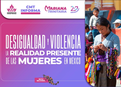
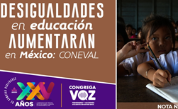
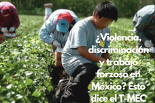

Actualizaciones de la desigualdad social en Mexico.

Otras caras de la desigualdad para las mujeres en el ambito laboral
El 2025 fue un año histórico para la igualdad de género en México. Bajo el liderazgo de la primera mujer presidenta del país y en el marco de los 30 años de la Plataforma de Acción de Beijing, se dieron pasos firmes hacia un México más justo para todas las mujeres y niñas, por lo que se vivieron muchos momentos que marcaron el año. La Ciudad de México fue sede de la XVI Conferencia Regional sobre la Mujer, donde gobiernos, parlamentos, academia y movimientos feministas se unieron para renovar compromisos. Nació el Compromiso de Tlatelolco y se lanzó la Década de Acción por la Sociedad del Cuidado (2025–2035), colocando el cuidado en el centro del desarrollo.
Y se invita a todas las mujeres a crear acciones que transforman vidas ONU Mujeres acompañó iniciativas para: Fortalecer la autonomía económica de las mujeres Impulsar la acción climática con perspectiva de género. Generar datos que guíen mejores decisiones públicas. Y prevenir la violencia contra mujeres y niñas, incluyendo un estudio nacional sobre violencia digital y la campaña Es Real. #EsViolenciaDigital, que abrió los ojos de miles sobre este problema.

Desiagualdad en estudiantes
las desigualdades a las que se enfrentan los estudiantes mexicanos, el Instituto Mexicano para la Competitividad (IMCO) presenta un panorama general de los obstáculos educativos para los estudiantes, así como algunas propuestas para cerrarlas. México necesita un sistema educativo que genere en sus estudiantes las habilidades necesarias para el futuro, pero también uno que garantice la igualdad educativa en términos de acceso, permanencia y calidad en el país.
Desigualdad en el acceso a la educación
En México hay 34.8 millones de niños, niñas y jóvenes entre tres y 18 años que, por su edad, deberían asistir a la educación obligatoria. De ellos, 6.4 millones no asisten a la escuela 18%. La mitad de los estudiantes que no logran acceder a la educación formal pertenecen a algún grupo desfavorecido, tales como las comunidades indígenas, personas con discapacidad, población rural y afrodescendiente.

Un ejemplo emblemático de las anomalías y la disparidad con la que se reparten los recursos ocurrió en Sonora norte de México, donde el exsecretario de Agricultura, Héctor Ortiz Ciscomani, benefició a sus empresas con unos 30 millones de pesos (1,6 millones de dólares) provenientes de diversos subsidios gubernamentales. El exservidor público fue consignado por el delito de ejercicio abusivo de funciones, informó en su momento la Fiscalía general (PGR).
Desde el 2016, tras los cambios en las reglas de operación, el programa es menos regresivo porque se logró acotar los apoyos a los grandes productores mediante topes, ha señalado Fundar. Sin embargo, aún falta incorporar en los padrones a los pequeños productores del centro y sur del país, los más desfavorecidos desde que se crearon estos subsidios.
Otro ejemplo de la desigualdad en el campo se haya en la concentración del agua en pocas manos, como en Sonora, donde los pequeños productores han tenido que vender sus tierras al quedarse sin concesiones de agua para sus cultivos. En Chihuahua los rarámuris han tenido que abandonar la sierra tarahumara y sus cultivos de autoconsumo ante la violencia que azota la región y han tenido que desplazarse a otras localidades para emplearse como jornaleros.